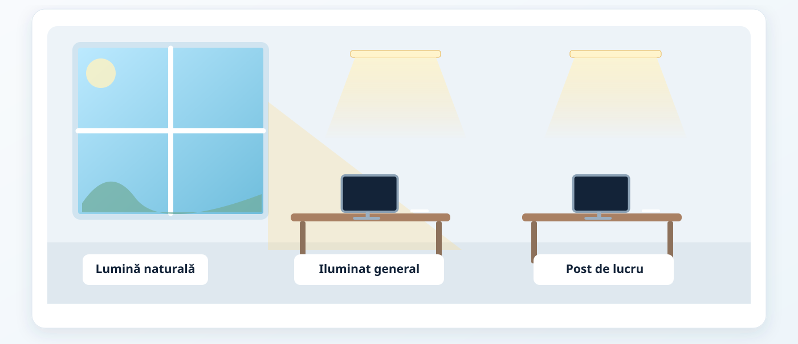
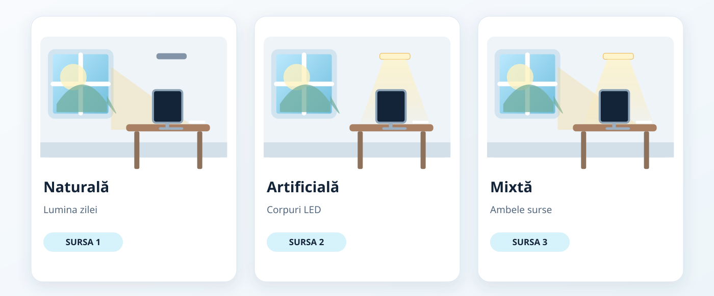
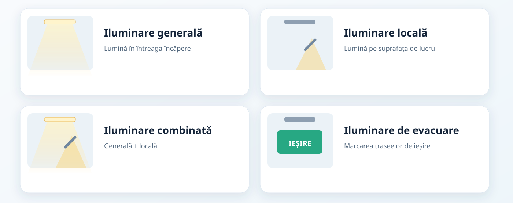
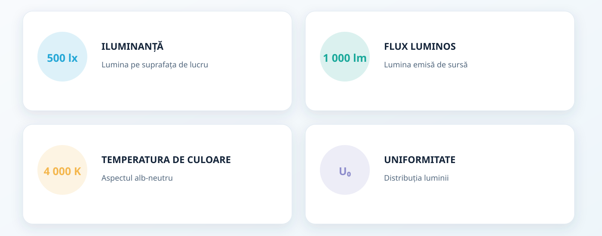
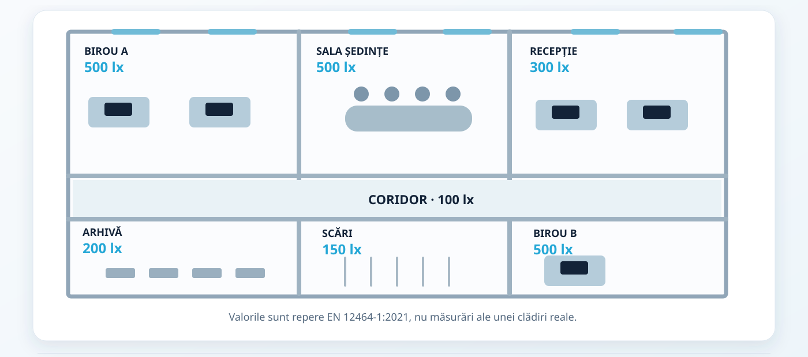
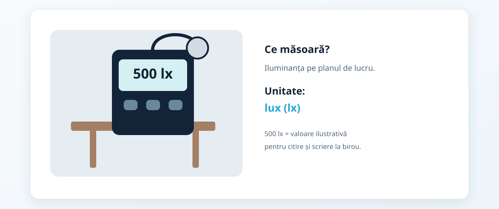
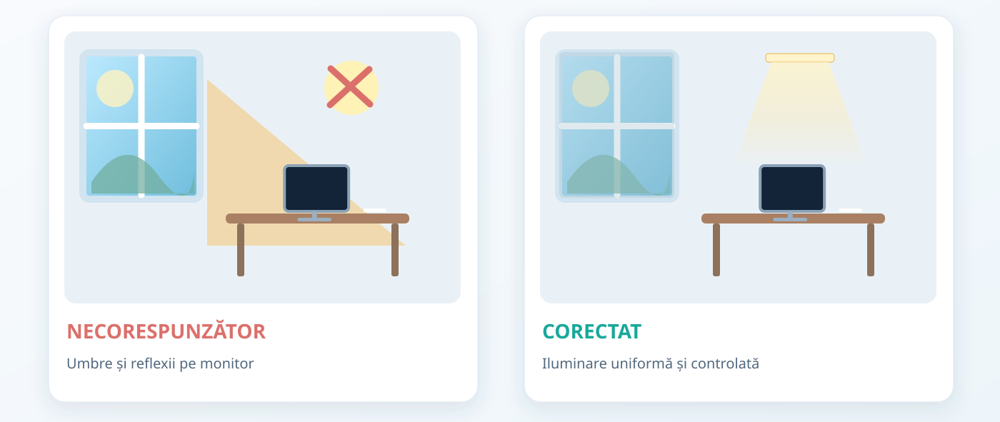

Iluminarea de producere
Tipuri de iluminare și organizarea iluminatului într-un bloc administrativ — de la lumina care intră pe fereastră până la planul unui etaj întreg.
- Definești iluminarea de producere
- Distingi sursele și rolurile
- Cunoști parametrii luminii
- Organizezi un etaj administrativ

Lumină naturală, iluminat general și post de lucru — ilustrație demonstrativă.
Ce este iluminarea de producere?
Iluminarea de producere reprezintă asigurarea luminii necesare desfășurării activităților profesionale în condiții de siguranță, confort vizual și eficiență. Ea influențează posibilitatea de a observa documente, ecrane, echipamente, indicatoare și obstacole.
Într-un bloc administrativ, iluminatul este important pentru citire, scriere, lucrul la calculator, ședințe și deplasarea pe coridoare și scări.
De ce contează?
- Ajută la observarea clară a obiectelor și informațiilor.
- Poate reduce oboseala vizuală și disconfortul produse de condițiile necorespunzătoare.
- Susține concentrarea și desfășurarea corectă a sarcinilor.
- Ajută la prevenirea accidentelor în spațiile de circulație.
- Un sistem bine controlat poate evita consumul inutil de energie electrică.
Ideea de reținut
Nu orice spațiu are nevoie de aceeași cantitate de lumină: nivelul depinde de activitate.
De aceea, prima întrebare nu este „cât de luminos trebuie să fie?”, ci „ce se întâmplă în încăperea aceea?”
Un birou de contabilitate, o recepție și un coridor au cerințe diferite, deși sunt în aceeași clădire.
Termen-cheie: „iluminarea de producere” nu înseamnă doar instalația electrică. Ea include lumina naturală, lumina artificială, modul în care sunt așezate posturile de lucru și întreținerea sistemului.
Tipurile de iluminare după sursă
După proveniența luminii, deosebim iluminarea naturală, artificială și mixtă. Alege o variantă și observă ce se schimbă în încăpere.
Iluminare naturală
Lumina zilei pătrunde prin ferestre și luminatoare. Poate fi laterală, superioară sau combinată, însă variază cu vremea, anotimpul, ora și orientarea clădirii.
Simulare demonstrativă: nu calculează valori în lux.

Iluminare naturală
Lumina zilei pătrunde prin ferestre, luminatoare și alte suprafețe vitrate. Poate fi laterală, superioară sau combinată.
Reduce utilizarea corpurilor electrice pe timpul zilei, dar variază. Lumina solară directă poate genera reflexii și supraîncălzire.
Exemplu concret
Iluminare artificială
Lumina este generată de dispozitive electrice: panouri LED, plafoniere, corpuri suspendate sau lămpi de birou. Devine necesară când lumina naturală lipsește ori nu este suficientă.
Permite controlul intensității, dar cere alimentare electrică și o distribuție corectă, pentru a evita umbrele și orbirea.
Exemplu concret
Iluminare mixtă
Combină lumina naturală cu cea artificială. Poate păstra niveluri mai constante pe suprafețele de lucru și permite reducerea consumului prin senzori și reglarea corpurilor LED.
Este varianta obișnuită într-un bloc administrativ: fereastra aduce lumină, instalația completează diferența.
Exemplu concret
Tipurile de iluminare după rol
Aceeași instalație poate conține mai multe sisteme, fiecare cu un rol diferit în încăpere.

Generală
Iluminează o încăpere în ansamblu.
Exemplu: panouri LED distribuite pe tavan.
Locală
Iluminează o suprafață sau o sarcină anume.
Exemplu: lampă orientată spre documente.
Combinată
Iluminare generală completată de iluminare locală.
Exemplu: panouri LED + lampă de birou.
De securitate și urgență
Facilitează evacuarea sau susțin activitățile esențiale dacă iluminatul normal nu mai funcționează.
Exemplu: corpuri autonome pe ieșiri și căi de evacuare.
Atenție la terminologie. Iluminarea mixtă înseamnă sursă naturală + artificială. Iluminarea combinată înseamnă iluminare generală + locală. Sunt două clasificări diferite și nu trebuie confundate.
Parametrii principali ai iluminatului
Cinci noțiuni explică aproape tot ce se discută despre lumină la locul de muncă.

| Parametru | Definiție simplă | Unitate / observație |
|---|---|---|
| Iluminanță | Fluxul luminos care ajunge pe unitatea de suprafață. | lux (lx) · 1 lx = 1 lm/m² |
| Flux luminos | Cantitatea de lumină emisă de o sursă, evaluată după sensibilitatea vizuală umană. | lumen (lm) |
| Temperatură de culoare | Aspectul cald, neutru sau rece al luminii. | kelvin (K) · ~2700–3000 K cald, ~3500–4000 K neutru, ~5000–6500 K rece |
| Uniformitate | Cât de egal se distribuie iluminanța pe zona analizată. | nu se exprimă în lux; poate fi raport între iluminanța minimă și medie |
| Orbire / reflexii | Disconfortul sau diminuarea vizibilității cauzate de lumina excesivă ori reflectată. | se evaluează prin criterii specifice, nu doar prin numărul de lux |
Important. Lumenii unui corp de iluminat nu se transformă direct în lux fără a cunoaște suprafața, distribuția și poziția sursei. Iar temperatura de culoare nu este temperatura fizică a becului.
Cum se organizează iluminatul într-un bloc administrativ?
Aceasta este secțiunea principală a lecției. Alege o încăpere din plan și vezi ce tip de iluminare îi corespunde, ce nivel de referință are și ce greșeală trebuie evitată.
Valori de referință pentru activități și spații
Valorile sunt repere de iluminare menținută, utile pentru a compara spațiile între ele.
| Spațiu / activitate | Iluminanță de referință |
|---|---|
| Birou — citire, scriere, tastare, prelucrare date | 500 lx |
| Sală de ședințe | 500 lx |
| Ghișeu de recepție | 300 lx |
| Arhivă | 200 lx |
| Coridor | 100 lx |
| Scări | 150 lx |
Valorile sunt repere de iluminare menținută din EN 12464-1:2021 pentru activitățile indicate, nu măsurări ale unei clădiri reale și nici o transpunere automată a tuturor normelor juridice moldovenești. Pentru proiecte reale se verifică standardul aplicabil și HG nr. 353/2010, inclusiv anexa nr. 3.
Pașii de organizare
- Identificarea funcției fiecărei încăperiSe stabilește ce activități vizuale au loc.
- Studiul luminii naturaleSe analizează ferestrele, orientarea, umbrele și reflexiile.
- Proiectarea iluminării generaleSe aleg și se distribuie corpurile pentru iluminarea corespunzătoare a spațiilor.
- Poziționarea posturilor de lucruSe evită reflexiile directe pe monitoare și lumina orbitoare în câmpul vizual; adesea ferestrele se află lateral față de monitor.
- Iluminare locală unde este necesarPentru activități sau detalii care cer lumină suplimentară.
- Iluminare de evacuareSe includ corpurile și indicatoarele necesare căilor de evacuare, conform cerințelor relevante.
- Măsurare și întreținereSe verifică nivelurile de lumină și starea instalației.
Planul de mai sus este schematic: arată logica repartizării, nu dimensiuni, trasee de cabluri sau soluții de proiectare.
Planul ilustrat din materialul original (referință vizuală)

Ilustrația folosește aceleași repere de iluminare, prezentate ca plan al unui etaj.Cum se măsoară iluminanța?
Un luxmetru este un instrument dotat cu un senzor sensibil la lumină. El măsoară iluminanța (lx) în punctul în care este poziționat.
Într-un birou, măsurarea se realizează în zone reprezentative ale suprafeței de lucru, cu atenție la influența ferestrelor și a iluminării artificiale. O singură valoare nu descrie neapărat uniformitatea întregii încăperi.

Exemplu didactic. Luxmetrul afișează 500 lx, valoare folosită aici ca reper pentru lucrul cu documente. Nu este o măsurare reală.
Greșeli frecvente și prevenire
Problemele de iluminare se recunosc ușor atunci când știi la ce să te uiți.

| Problemă | Efect posibil | Soluție |
|---|---|---|
| Lumină insuficientă | dificultăți de citire, oboseală vizuală | măsurare, completarea iluminării |
| Orbire de la corpuri luminoase | disconfort, pierderea vizibilității | difuzoare, repoziționare, controlul luminii |
| Reflexii pe monitor | citire dificilă | orientarea biroului și jaluzele |
| Lumină neuniformă | contrast neplăcut între zone | distribuirea adecvată a corpurilor |
| Corpuri defecte sau murdare | scăderea iluminării | întreținere periodică |
Birou administrativ cu patru angajați
Un singur corp central, ferestre în spatele monitoarelor
Situația
Patru persoane lucrează într-o încăpere. Un singur corp de iluminat central produce o distribuție inegală, iar ferestrele aflate în spatele monitoarelor generează reflexii.
Analiza
Iluminarea este insuficient adaptată suprafețelor de lucru; suprafețele ecranelor pot reflecta surse puternice.
Măsuri
Reorientarea birourilor, jaluzele reglabile, panouri LED distribuite corespunzător, lampă locală unde este utilă și verificări cu luxmetrul.
Rezultat urmărit
Confort vizual mai bun, reflexii reduse, iluminare adecvată activităților.
Iluminarea de producere este esențială pentru siguranța și confortul la locul de muncă. Într-un bloc administrativ, lumina naturală și artificială trebuie organizate în funcție de activitate, poziția posturilor de lucru și cerințele de evacuare. Nivelul de iluminare se verifică prin măsurare, nu doar prin aprecierea vizuală.
Test de verificare
Cinci întrebări, feedback imediat și explicația fiecărui răspuns. Nu se colectează date.